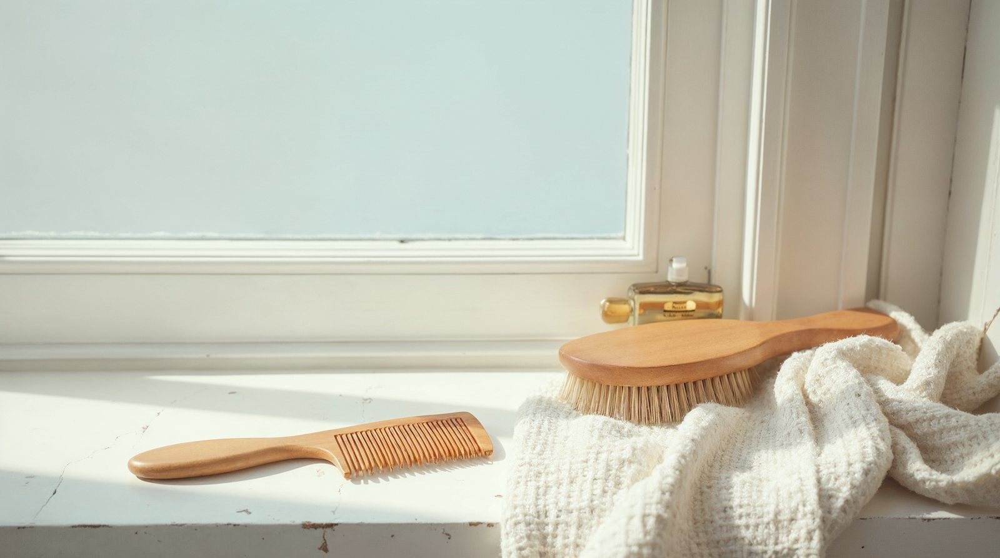
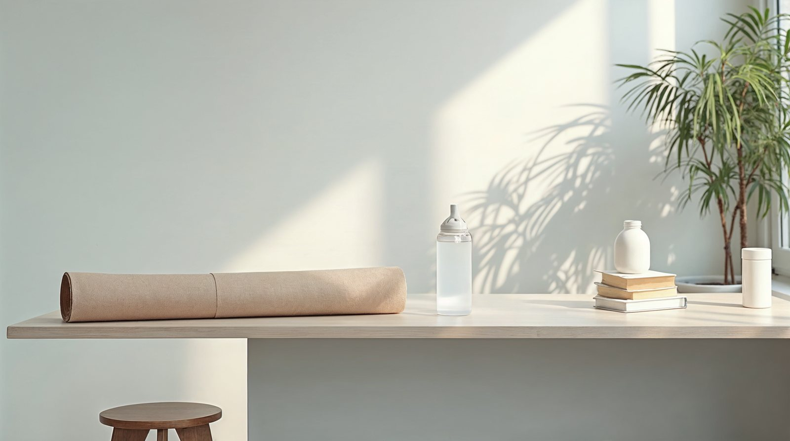
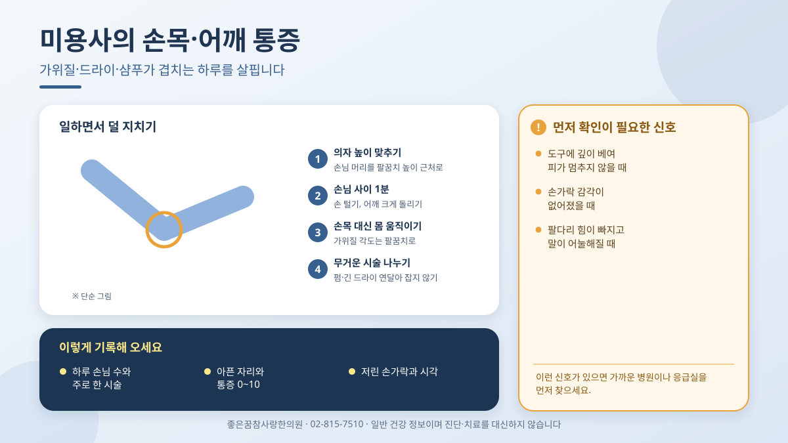

이종호 한의사 감수좋은꿈참사랑한의원 대표원장 (한의사 면허번호 19769)발행 2026-11-26 · 수정 2026-11-26
이 글의 차례
마지막 손님의 머리를 말려 드리고 가위를 내려놓는 순간, 엄지 쪽 손목이 찌릿합니다. 하루 종일 팔을 들고 있던 오른쪽 어깨는 묵직하고, 서 있던 다리와 허리는 뻣뻣하게 굳어 있습니다. 집에 가서 쉬면 조금 나아지지만, 다음 날 첫 손님을 맞을 때부터 다시 시작입니다.
미용 일을 하시는 분들은 손님이 몰리는 날이면 점심도 거르고 몇 시간씩 같은 자세로 일하십니다. 아파도 예약을 미룰 수 없고, 손이 곧 생계이니 참고 버티는 경우가 많습니다. 진료실에 오실 때는 이미 통증이 몇 달째 이어진 뒤인 경우가 적지 않습니다.
미용 일은 손가락과 손목의 섬세한 움직임, 팔을 들어 올린 자세, 오래 서 있기가 하루 내내 겹치는 일입니다. 그래서 한 자리만 아프기보다 손목, 팔꿈치, 어깨, 목, 허리가 줄줄이 지쳐 가는 경우가 많습니다.
이 글에서는 미용 일의 어떤 동작이 어디에 부담을 주는지, 흔히 보이는 통증을 어떻게 나눠 보는지, 일을 이어 가면서 해 볼 수 있는 것과 한의원에서 함께 살필 수 있는 부분을 정리해 보겠습니다.

미용 일의 어떤 동작이 어디에 부담을 줄까요
가위질은 엄지와 약지로 가위를 열고 닫는 동작을 하루 수천 번 반복합니다. 엄지를 움직이는 힘줄이 지나는 손목 바깥쪽과 엄지 뿌리, 가위 고리에 끼우는 손가락 마디에 부담이 쌓입니다. 손목을 꺾은 채 가위질을 하는 습관이 있으면 부담은 더 커집니다.
드라이와 아이롱은 무거운 기구를 든 팔을 어깨 높이 위로 오래 들고 있게 합니다. 어깨 위쪽 근육과 힘줄이 쉬지 못하고, 손목은 브러시를 돌리느라 쉴 새 없이 비틀립니다. 기구가 무겁고 선이 당길수록 손목과 팔꿈치의 부담도 커집니다.
펌을 위해 롤을 마는 일은 손가락 끝에 힘을 주어 머리카락을 감고 고정하는 동작의 연속입니다. 손가락 마디와 손바닥 쪽 힘줄이 지치기 쉽습니다. 샴푸는 허리를 앞으로 굽힌 채 팔을 뻗어 일하는 자세라 허리와 어깨, 목에 부담이 갑니다.
여기에 하루 종일 서 있는 일과 손님 머리 높이에 맞춰 몸을 비트는 자세가 더해집니다. 의자 높이를 손님마다 맞추지 못하면 허리를 숙이거나 팔을 더 들어야 하고, 그만큼 몸 전체의 부담이 늘어납니다.
왜 손목과 어깨가 함께 아파 올까요
손목과 어깨는 떨어져 있지만 한 팔로 이어져 일합니다. 어깨가 지쳐 팔을 안정적으로 받쳐 주지 못하면, 손목과 손가락이 그만큼 더 힘을 써서 정밀한 동작을 해내야 합니다. 반대로 손목이 아파 힘을 덜 쓰려고 하면 어깨와 팔꿈치가 대신 버팁니다.
쉬는 시간이 짧은 것도 큰 이유입니다. 손님이 이어지는 날에는 한 동작을 마치자마자 다음 동작을 시작하니, 근육과 힘줄에 생긴 미세한 피로가 회복될 틈이 없습니다. 이런 날이 쌓이면 붓기와 통증이 자리를 잡습니다.
끼니를 거르거나 급하게 먹고, 잠이 부족하고, 손님을 응대하며 긴장하는 일도 회복을 더디게 합니다. 손을 자주 씻고 약품을 다루면서 손이 차고 거칠어지는 것도 손가락 마디를 더 뻣뻣하게 만듭니다.
몸이 차가운 상태에서 일을 시작하는 것도 부담을 키웁니다. 겨울 아침 문을 열자마자 찬 가위를 쥐고 첫 손님을 맞으면, 덜 풀린 힘줄이 갑자기 많은 일을 떠안게 됩니다. 첫 손님 전 몇 분이라도 손을 데우는 시간이 의미 있는 이유입니다.
한의학에서는 이렇게 같은 부위를 오래 써서 근육과 힘줄이 지친 모습을 오래 서 있거나 오래 쓰면 근육과 뼈가 상한다는 옛 표현으로 설명해 왔습니다. 진찰할 때 참고하는 전통적인 관점이며, 진료실에서는 이를 바탕으로 피로와 잠, 손발의 온도를 함께 봅니다.
미용 일에서 자주 보이는 통증은 무엇인가요
미용 일을 하시는 분들께 자주 보이는 통증을 나눠 보면 다음과 같습니다. 한 분에게 둘 이상이 겹치는 경우도 흔합니다.
- 엄지 쪽 손목이 찌릿한 드퀘르뱅 건초염: 가위질과 브러시 돌리기로 엄지 힘줄이 지나는 길에 염증이 생깁니다.
- 손가락이 딸깍 걸리는 방아쇠수지: 가위 고리에 끼우는 손가락이나 엄지에 잘 생깁니다.
- 엄지부터 약지가 저린 손목터널증후군: 손목을 꺾은 채 오래 일하면 새벽에 손이 저려 깨기도 합니다.
- 팔꿈치 바깥이나 안쪽이 시큰한 엘보: 기구를 쥐고 손목을 비트는 일이 쌓여 생깁니다.
- 팔을 들 때 어깨가 걸리듯 아픈 어깨 힘줄 문제: 드라이를 위해 팔을 오래 들어 올리는 자세와 연결됩니다.
- 목과 날개뼈 주변의 뭉침, 허리와 종아리, 발바닥의 피로: 오래 서서 고개를 숙이는 자세와 연결됩니다.
같은 손목 통증이라도 엄지 쪽인지, 새끼손가락 쪽인지, 손목 가운데인지에 따라 살피는 방향이 다릅니다. 저림이 있다면 어느 손가락이 저린지가 신경이 눌린 자리를 알려 주는 단서가 됩니다.

일을 하면서 어떻게 부담을 덜 수 있을까요
일을 쉬기 어려운 분이 많으니, 일하는 방식을 조금씩 바꾸는 것이 현실적입니다. 가장 먼저 손님 의자 높이를 매번 맞추는 습관을 들여 보세요. 손님 머리가 내 팔꿈치 높이 근처에 오면 손목과 어깨, 허리가 함께 편해집니다.
가위는 손에 맞는 크기와 고리, 엄지 받침이 있는 것을 고르고, 날을 잘 관리해 적은 힘으로 잘리게 하는 것이 좋습니다. 가위질을 할 때 손목을 꺾기보다 팔꿈치와 몸을 함께 움직여 각도를 맞추는 연습을 해 보세요.
드라이어는 가능하다면 가볍고 선이 유연한 것을 쓰고, 팔을 너무 높이 들지 않도록 손님 의자를 낮추거나 발판을 쓰는 방법도 있습니다. 한 시간에 한 번은 팔을 내리고 어깨를 크게 돌려 주세요.
손님과 손님 사이 1~2분이라도 손을 털고 손목을 천천히 돌리며, 손가락을 활짝 폈다 쥐는 시간을 만들어 보세요. 짧은 쉬는 시간이 하루 동안 쌓이면 저녁의 통증이 달라진다고 말씀하시는 분이 많습니다.
예약을 잡을 때도 몸을 생각해 볼 수 있습니다. 손목을 많이 쓰는 펌이나 긴 머리 드라이가 연달아 잡히지 않도록 사이사이 비교적 가벼운 시술을 끼워 넣으면, 같은 하루라도 손과 어깨가 쉬어 갈 틈이 생깁니다.
샴푸할 때는 허리를 굽히기보다 무릎을 살짝 굽히고 배에 힘을 준 채 몸을 가까이 붙이는 것이 좋습니다. 팔을 멀리 뻗을수록 허리와 어깨가 받는 부담이 커지기 때문입니다.
일을 시작한 시기에 따라 아픈 곳이 다를 수 있나요
미용 일을 막 시작한 시기에는 샴푸와 보조 업무가 많아 허리와 다리, 손가락 피부가 먼저 지치는 경우가 많습니다. 아직 몸이 하루 종일 서 있는 일에 익숙하지 않고, 쉬는 시간을 챙기기도 어려운 시기입니다.
커트와 드라이를 본격적으로 맡게 되면 손목과 엄지, 어깨의 부담이 커집니다. 실력을 쌓느라 연습까지 더하는 시기에는 같은 동작을 하루 수천 번 반복하게 되어, 엄지 쪽 손목 통증이나 방아쇠수지가 시작되는 경우가 많습니다.
오래 일하신 분들은 같은 자세가 몸에 익어 버린 경우가 많습니다. 한쪽 어깨가 늘 올라가 있거나, 고개가 한쪽으로 기울어 있거나, 한쪽 다리에만 체중을 싣는 습관이 굳어 목과 허리, 골반까지 함께 불편해집니다. 아픈 손목만 보지 않고 몸 전체의 자세를 함께 보는 이유입니다.
연말이나 명절 앞, 졸업과 입학 시즌처럼 손님이 몰리는 시기에는 통증이 갑자기 심해지기 쉽습니다. 이런 시기를 앞두고는 미리 쉬는 시간을 일정에 넣어 두고, 퇴근 뒤 회복에 조금 더 신경 써 주세요.
먼저 이렇게 여쭙니다
처음 오시면 저는 대략 이런 순서로 여쭙니다. 미리 생각해 오시면 이야기가 훨씬 수월해집니다.
- 미용 일은 몇 년째 하시고, 하루 몇 분의 손님을 받으시나요?
- 커트, 펌, 염색, 드라이, 샴푸 가운데 어떤 일을 가장 많이 하시나요?
- 손목은 엄지 쪽, 새끼손가락 쪽, 손목 한가운데 중 어디가 아픈가요?
- 손가락 저림이 있나요? 새벽에 저려서 깨는 일이 있나요?
- 팔을 들 때 어깨가 걸리거나 밤에 어깨가 아파 깨나요?
- 점심과 쉬는 시간은 어떻게 보내시나요?
- 잠과 소화, 손발이 찬 정도는 어떠신가요?
모든 질문에 정확히 답하지 못하셔도 괜찮습니다. 일하는 모습을 동료에게 부탁해 짧게 찍어 오시면, 가위를 쥐는 손목 각도와 팔 높이를 함께 볼 수 있습니다.
일상에서 먼저 해 볼 수 있는 것
일터에서의 요령과 함께 퇴근 뒤의 시간도 회복에 중요합니다. 한꺼번에 다 하시기보다 맞는 것을 골라 보세요.
- 출근 뒤 첫 손님 전 손을 따뜻한 물에 담그고 손가락과 손목 천천히 풀기
- 손님과 손님 사이에 손 털기, 어깨 돌리기 1분
- 점심은 짧게라도 앉아서 먹기
- 퇴근 뒤 손목과 팔뚝, 어깨를 따뜻하게 데우고 부드럽게 주무르기
- 손을 씻은 뒤에는 보습제를 바르고, 찬물 대신 미지근한 물 쓰기
- 쉬는 날에는 휴대폰을 오래 쥐는 시간 줄이기
쿠션이 있는 신발과 바닥 매트는 다리와 허리의 피로를 덜어 줍니다. 퇴근 뒤 다리를 조금 높게 두고 쉬면 종아리 붓기도 덜합니다. 몸 한 부분의 부담이 줄면 다른 부분도 함께 덜 지칩니다. 압박 양말이 편하다는 분도 있으니 한번 시도해 보셔도 좋습니다.
손이 아프다고 손목 보호대를 일할 때 계속 차는 분도 계십니다. 보호대가 도움이 되는 경우도 있지만, 너무 꽉 묶거나 손목을 완전히 막으면 팔꿈치와 어깨에 부담이 옮겨갈 수 있습니다. 쉬는 시간이나 잘 때 쓰는 쪽이 맞는지 상태에 따라 함께 정하시면 좋습니다.
한의원에서 함께 살필 수 있는 경우
- 엄지 쪽 손목이나 손가락 마디가 시큰하고 아픈 경우
- 손가락이 걸리거나 새벽에 손이 저려 깨는 경우
- 드라이를 할 때 어깨가 걸리고 밤에 어깨가 아픈 경우
- 목과 날개뼈, 허리와 다리가 함께 지치는 경우
- 끼니를 거르고 잠이 부족해 피로가 쌓인 경우
좋은꿈참사랑한의원에 오시면 먼저 아래 '먼저 확인이 필요한' 신호가 없는지부터 봅니다. 그다음 맥을 짚고, 손끝부터 어깨와 목, 허리까지 이어지는 부담의 흐름을 차례로 만져 보며 확인합니다. 저림이 있다면 어느 신경이 지나는 길인지도 함께 살핍니다.
진찰한 내용을 바탕으로 침, 온열 관리, 한약 상담 가운데 지금 상태에 맞는 것을 정합니다. 쉬는 날이나 일이 덜 몰리는 시간에 맞춰 진료 간격을 정하는 경우가 많습니다. 한약을 상의할 때는 드시는 약을 모두 확인하고 신중하게 정하고, 임신 중이라면 먼저 알려 주시고 산부인과와 상의해 정합니다.
힘줄 염증이 심하거나 신경 눌림이 오래된 경우에는 정형외과 진료를 함께 권합니다. 일을 이어 가야 하는 상황을 잘 알기에, 무리하게 쉬라고만 하기보다 일하는 방식을 함께 조정하는 쪽으로 이야기합니다.
이렇게 기록해 오시면 상담이 쉬워집니다
미용 일의 통증은 손님 수와 시술 종류에 따라 크게 달라집니다. 2주 정도만 간단히 적어 보세요.
- 하루 손님 수와 주로 한 시술
- 아팠던 자리와 통증의 정도를 0에서 10으로
- 저림이 있었던 손가락과 시각
- 점심과 쉬는 시간을 가졌는지
- 잠든 시각과 깬 시각, 새벽에 깬 일
- 쉬는 날의 통증 변화
기록을 나란히 놓고 보면 어떤 시술이 많은 날 어디가 아픈지가 보이기 시작합니다. 그 흐름을 바탕으로 일의 순서와 쉬는 시간을 함께 다시 짜 볼 수 있습니다. 바쁜 날일수록 기록이 빠지기 쉬우니, 퇴근길에 휴대폰 메모에 한 줄씩만 남겨 두셔도 충분합니다.
손님의 머리를 매만지는 손을 위해
미용사의 손은 하루에도 여러 사람의 하루를 바꿔 주는 손입니다. 그 손이 오래 일할 수 있도록, 아픔을 참고 버티기보다 일찍 알아차리고 돌보는 것이 중요합니다.
거창한 변화가 아니어도 괜찮습니다. 이번 주에는 손님 의자 높이를 매번 맞추는 것, 손님 사이 1분 손 털기부터 시작해 보세요. 다음에 오시면 일하는 모습을 찍은 짧은 영상과 기록부터 함께 보겠습니다.
이런 증상은 먼저 확인이 필요합니다
- 가위나 도구에 깊이 베여 피가 멈추지 않거나 손가락 감각이 없어진 경우
- 한쪽 팔다리에 갑자기 힘이 빠지거나 말이 어눌해지고 얼굴 한쪽이 처지는 경우
이런 신호가 있으면 한의원보다 가까운 병원이나 응급실을 먼저 찾으세요.
함께 읽으면 좋은 글
- 미용 일을 오래 하면 어깨와 목이 뻐근한 것은 어떻게 살피나요?
- 아기를 안거나 휴대폰을 쥘 때 엄지 쪽 손목이 찌릿한 드퀘르뱅 건초염은 어떻게 살피나요?
- 손가락을 굽혔다 펼 때 딸깍 걸리는 방아쇠수지는 어떻게 살피나요?
- 팔을 들 때 어깨가 걸리듯 아픈 충돌증후군·회전근개 문제는 어떻게 살피나요?
- 손을 자주 씻는 일을 하는데 손가락 사이가 갈라지고 따가울 때는 어떻게 살피나요?

여쭙는 것
- 미용 일은 몇 년째 하시고, 하루 몇 분의 손님을 받으시나요?
- 커트, 펌, 염색, 드라이, 샴푸 가운데 어떤 일을 가장 많이 하시나요?
- 손목은 엄지 쪽, 새끼손가락 쪽, 손목 한가운데 중 어디가 아픈가요?
생활에서 해 볼 것
- 출근 뒤 첫 손님 전 손을 따뜻한 물에 담그고 손가락과 손목 천천히 풀기
- 손님과 손님 사이에 손 털기, 어깨 돌리기 1분
- 점심은 짧게라도 앉아서 먹기
한의원에서 함께 살필 것
- 엄지 쪽 손목이나 손가락 마디가 시큰하고 아픈 경우
- 손가락이 걸리거나 새벽에 손이 저려 깨는 경우
- 드라이를 할 때 어깨가 걸리고 밤에 어깨가 아픈 경우
먼저 확인이 필요한 신호
- 가위나 도구에 깊이 베여 피가 멈추지 않거나 손가락 감각이 없어진 경우
- 한쪽 팔다리에 갑자기 힘이 빠지거나 말이 어눌해지고 얼굴 한쪽이 처지는 경우
한눈에 보는 표
| 구분 | 핵심 |
|---|---|
| 여쭙는 것 | 미용 일은 몇 년째 하시고, 하루 몇 분의 손님을 받으시나요? 커트, 펌, 염색, 드라이, 샴푸 가운데 어떤 일을 가장 많이 하시나요? |
| 생활에서 해 볼 것 | 출근 뒤 첫 손님 전 손을 따뜻한 물에 담그고 손가락과 손목 천천히 풀기 손님과 손님 사이에 손 털기, 어깨 돌리기 1분 |
| 한의원에서 함께 살필 것 | 엄지 쪽 손목이나 손가락 마디가 시큰하고 아픈 경우 손가락이 걸리거나 새벽에 손이 저려 깨는 경우 |
| 먼저 확인이 필요한 신호 | 가위나 도구에 깊이 베여 피가 멈추지 않거나 손가락 감각이 없어진 경우 한쪽 팔다리에 갑자기 힘이 빠지거나 말이 어눌해지고 얼굴 한쪽이 처지는 경우 |
자주 묻는 질문
일을 쉬지 않고도 손목 통증을 관리할 수 있을까요?
쉬기 어려운 상황이 많아서, 의자 높이 맞추기, 가위 쥐는 각도, 손님 사이 짧은 쉬는 시간처럼 일하는 방식을 조정하는 것부터 함께 살핍니다. 통증이 심하거나 오래되면 일의 양을 잠시 줄이는 것도 상의합니다.
손목 보호대를 일할 때 계속 차도 되나요?
너무 꽉 묶거나 손목을 완전히 막으면 팔꿈치와 어깨에 부담이 옮겨갈 수 있습니다. 쉬는 시간이나 잘 때 쓰는 쪽이 맞는지 상태에 따라 정합니다.
엄지 쪽 손목이 아픈데 손목터널증후군인가요?
엄지 쪽 손목이 찌릿하고 엄지를 움직일 때 아프다면 드퀘르뱅 건초염인 경우가 많습니다. 손목터널증후군은 주로 엄지부터 약지까지 저림이 특징이라 진찰로 나눠 봅니다.
쉬는 날 한 번 와도 도움이 될까요?
쉬는 날에 맞춰 진료 간격을 정하는 분이 많습니다. 진찰한 뒤 상태에 맞는 간격을 함께 정하고, 그사이 일터에서 할 수 있는 요령을 말씀드립니다.
손이 자주 갈라지고 따가운 것도 함께 볼 수 있나요?
손을 자주 씻고 약품을 다루는 일과 연결된 경우가 많아 함께 여쭙니다. 피부 상태가 심하면 피부과 진료를 함께 권하기도 합니다.
좋은꿈참사랑한의원은 재진 때 지난번 이야기부터 이어서 여쭙니다. 진료시간과 예약은 오시는 길에서 확인하세요.
어디서 상담받을 수 있나요?
좋은꿈참사랑한의원은 서울 동작구 만양로2길 2 신성빌딩 3층·5층(서울 동작구 상도동, 7호선 상도역 3번 출구 근처)에 있습니다. 한의사 3명(이종호 대표원장, 조영기 수석진료원장, 정원영 진료원장)이 진료합니다. 진료시간은 평일 09:30~20:00(점심 13:00~14:00), 토·일·공휴일 09:30~15:00이며, 방문 전 전화로 확인을 권합니다. 예약은 네이버 예약, 카카오톡 상담, 전화 02-815-7510로 받습니다.
이 글은 일반적인 건강 정보이며 개인의 진단이나 치료를 대신하지 않습니다. 증상이 있거나 복용 중인 약이 있다면 진료를 통해 확인하세요. 치료 효과는 개인마다 다를 수 있습니다.
작성 기준: 일반적으로 알려져 있는 건강 정보를 참고해 정리했습니다(대표원장 감수). 증상 기록은 1~2주 동안 하루 1회, 비슷한 시간에 적어 오시면 지난 상태와 비교하기 쉽습니다.